英文
英文凯恩
编者按
20世纪80年代，物理学家开始尝试构建利用量子效应的计算设备，至少对于某些计算任务而言，它可能比传统设备性能强大得多。由于其对来自环境的干扰具有内在的敏感性，这类机器的实际研发极具挑战性。本文中，澳大利亚物理学家布鲁斯·凯恩提出了一种实现量子计算机的方案，将其信息存储在硅电子器件中内嵌掺杂原子的相对孤立的核自旋中。他建议，逻辑运算可以在外部电场辅助下用这些自旋进行，并用自旋极化电子的电流进行测量。可行的量子计算机正在开发中，该方案仍然是许多正在被探索的策略之一。 英文
量子计算机的计算效率可能会超过传统经典计算机，因为量子算法允许用更少的步骤来执行某些任务。但是这些机器的实际研发仍然是一个艰巨的挑战。这里我将提出一种构建基于量子力学的计算机的方法。计算信息被编码在掺杂硅的电子器件中施主原子的核自旋上。单个自旋的逻辑运算用外部施加电场来实现，而自旋测量基于自旋极化电子的电流。这样一个计算机的实现依赖于传统硅器件未来的精密程度。 英文
尽管所有现代计算机所依赖的信息概念本质上都是基于经典理论的，然而物理学家知道自然界遵从量子力学定律。量子计算机的概念在理论上已经发展了几十年，旨在阐明使用量子力学来处理信息的计算机的能力和极限等基本问题[1,2]。具体而言，在量子计算机中，经典计算机中的0和1被一个二能级系统的量子态（量子比特）所取代。在量子比特上进行的逻辑运算及用来决定计算结果的测量必须遵守量子力学定律。量子计算理论上只能发生在与外界环境几乎完全隔离的系统中，这样在计算过程中不会存在能量的耗散，这样的苛刻条件在现实中很难满足。 英文
在过去四年中，两个重大的突破使人们对量子计算的兴趣与日俱增。第一个是量子算法（尤其值得一提的是质因子分解[3,4]和穷举搜索[5]）的开发，而且这些算法在执行相同任务时优于经典计算机上最著名的算法。这些算法要求量子计算机的内部状态被准确无误地控制，这样量子算法所依赖的相干量子态就不会被破坏。因为完全阻止量子退相干（量子系统和外界环境之间非受控的相互作用）是不可能的，所以量子算法的存在并不能保证它们可以在真实的计算机上面得以实现。 英文
第二个重大的突破是量子纠错码的发现，它可以使量子计算机运行时容忍一定程度的量子退相干，这使得量子计算机在实验上的实现成为可能[6,7]。眼下制造一台真正的量子计算机的任务是艰巨的：据普雷斯基尔[8]估计，一台使用106个量子比特且每次运算误码率为10－6的量子计算机可以在质因子分解问题上超过同时代的传统计算机。为了利用纠错码，逻辑运算和测量必须能够在整个计算机的量子比特上并行进行。 英文
自旋为1/2的粒子的状态是二能级系统，具备应用于量子计算的潜质。核自旋已经被纳入数个量子计算机提案[9-12]中，因为它们与外界环境间被很好地隔离，因此利用核自旋比特来运算，误码率可能很低。在量子计算机中使用核自旋的主要挑战在于测量自旋。量子计算的系综自旋共振方法[11,12]基本上是通过在大量分子上的并行量子计算并由宏观磁化测量确定结果来绕开单个自旋的测量问题。然而可测量信号随着量子比特数目的增多而减少，因此将这种方法扩展到10个量子比特以上将会对技术要求极为苛刻[37]。 英文
为了实现106量子比特计算机，有人建议使用“固态”方法[13]，这种方法也许可以最终复制现代电子器件微加工技术的巨大成功。核自旋量子计算的一种有吸引力的替代方法是将核自旋融合到电子器件中，并且通过电学方式来测量自旋以及控制其之间的相互作用[14]。电子和核自旋被超精细相互作用耦合在一起[15]。在适当情况下，极化可以在两个自旋系统中转移，核自旋极化可以通过其对样品的电子性质的影响来测量[16,17]。用来产生和探测核自旋极化的电子器件也已经在低温砷化镓（GaAs）/铝镓砷（AlxGa1-xAs）异质结构中实现[18]，类似的器件也已经被整合到纳米结构中[19,20]。尽管在纳米结构试验中研究的自旋数目仍然很大（约为1011；文献19），但在经过优化的器件中以及更强的超精细相互作用系统中，灵敏度会得到进一步的改善。 英文
这里我将介绍一种利用位于硅材料施主上面的核自旋阵列来实现量子计算机的方法，硅材料是大多数传统计算机电子学中使用的半导体。理论上逻辑运算和测量可以在阵列中的各个自旋上独立且并行执行。我将介绍特定的电子器件来实现核自旋的控制和测量，其制造需要迅猛发展的纳米科技领域的重大突破。把这里提出的器件缩放到普雷斯基尔[8]设想的尺寸的计算机中，这也许是一个巨大的挑战，然而，由于人们为了将传统电子器件做得更小且更加复杂的过程中积累了资源和聪明才智，硅基量子计算机仍然具有独特的地位。 英文
使用硅中31P阵列的量子计算
超精细相互作用的强度正比于原子核处电子波函数的概率密度。在半导体中，电子波函数在晶格上延展很长的距离。两个核自旋因此可以和同一个电子相互作用，这就导致了电子介导的或者间接的核自旋耦合[15]。由于电子对于外加电场的敏感，超精细相互作用以及电子介导的核自旋相互作用可以通过调节施加在半导体器件中金属栅极上的电压来控制，这使量子计算所要求的核自旋动力学的外部调制成为可能。 英文
如果核自旋位于半导体宿主中带正电的施主上面，电子耦合核自旋计算以及单核自旋检测所需要的条件会被满足。电子波函数将会集中于施主的原子核（对于s轨道和主要由它们组成的能带），产生大的超精细相互作用能。然而对于浅能级施主来说，电子波函数从原子核向外扩展了几十甚至几百埃，从而允许电子介导核自旋耦合在相对远的距离发生。本文提出的量子计算机包括在半导体宿主表面下方的一系列这样的施主（如图1）。量子力学计算通过精确控制三个外部参数来进行：（1）施主上方的栅极控制超精细相互作用的强度，因此也就控制了栅极下方的核自旋的共振频率；（2）施主之间的栅极可以用来开通和关闭核自旋之间的电子介导耦合[13]；（3）一个对全体施加的交变磁场Bac用来翻转与磁场共振的核自旋。单独调节每个自旋之间的耦合以及自旋与外加磁场Bac的耦合，使每个自旋上的不同运算可以同时进行。最后，通过转移核自旋极化到电子身上进而影响电子轨道波函数，最终通过测试其对相邻的栅极之间的电容的改变来测得自旋态。 英文
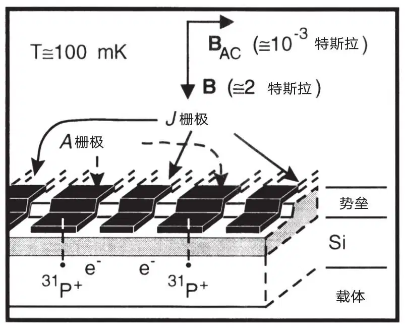
图1．硅宿主中31P施主和电子的一维阵列中的两个单元的示意图，图中的势垒层将该阵列与表面的金属栅极隔离开。“A栅极”用来控制核自旋量子比特的共振频率。“J栅极”用来控制相邻核自旋的电子介导耦合。栅极末端的台阶状设计使得加在施主附近的电场局域化。 英文
对于量子计算机来说，一个重要的要求是量子比特应该与可能导致退相干的任何自由度隔离开来。如果量子比特是在半导体中的施主上的自旋，施主自旋可以和宿主材料中其他大量核自旋构成的群体相互作用。因此宿主应该只含有自旋I=0的原子核。这个简单的要求遗憾地排除了所有III–V半导体作为宿主的可能性，因为他们中的任何元素都没有稳定的I=0的同位素[21]。而IV半导体主要包含I=0同位素，而且理论上可以被提纯到只含有I=0的同位素。由于硅材料技术的领先状态以及现阶段人们对硅纳米加工方面的巨大投入，硅理所当然地成为半导体宿主的选择。 英文
硅中唯一的I=1/2浅施主（第五主族）是31P。在40年以前人们发现的第一个电子–原子核双共振的试验中[22,23]Si:31P系统已经得到了深入的研究。温度T=1.5 K时，当31P的浓度足够低时，电子自旋的弛豫时间是几千秒，31P的核自旋弛豫时间超过10小时。这样的话，在毫开尔文的温度下，声子散射受限的31P的弛豫时间在1018秒的量级（文献24），使得这种系统成为量子计算的理想选择。 英文
该计算机利用电子来促成核自旋之间的相互作用以及核自旋的测量。电子和核自旋之间不可逆的相互作用必须在计算过程中避免：电子必须在整个计算过程中处于非简并基态。在足够低的温度下，通过外加磁场B打破电子基态的双重自旋简并度，这样电子只占据施主的最低能量束缚态。（硅的导带的谷简并在施主附近被破坏了[25]。施主的最低激发态大概是基态上方15 meV[23]。）当2μBB ≫ kT时，电子仅占据最低自旋能级，其中μB是波尔磁子。（在硅中，朗德g因子非常接近+2，所以在我们的讨论中使用g=2。）当T≤100 mK且B≥2 T的时候，电子将会被完全自旋极化
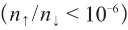
。量子力学计算机是无耗散的，因此可以在低温状态下运行。然而当栅极偏压出现以及Bac引起的涡电流出现时，计算机外部的功耗会上升，这在核自旋的极化和测量时也会出现。这些效应决定了计算机的最低工作温度。为了讨论这些问题，我们假设T=100 mK且B=2 T。注意这些条件并不是完全极化了核自旋，核自旋是通过和极化电子的作用来对齐的。 英文
在Si:31P中的自旋相互作用的量级
自旋相互作用的大小决定了量子比特基本运算所需要的时间以及阵列中施主之间需要的间隔。硅中的核自旋–电子系统的哈密顿量，在施主原子核I=1/2、磁场B方向平行于z方向时，为Hen=μBBσez-gnμnBσez+Aσe·σn，这里σ是泡利自旋矩阵（本征值为±1），μn是核磁子，gn是原子核的g因子（对于31P而言，g因子为1.13；文献21），
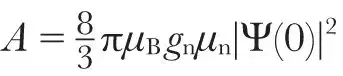
是接触超精细相互作用能，其中|Ψ(0)|2是电子波函数在原子核的概率密度。如果电子处于基态，那么原子核能级的频率间隔（取到二阶）是，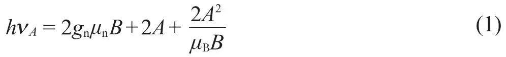
在Si:31P中，2A / h=58 MHz；在B<3.5 T的时候，公式（1）中的第二项大于第一项。 英文
一个施加于电子–施主系统的外加电场会使得电子波函数的包络线向远离原子核的方向平移从而减少超精细相互作用。根据科恩[25]对硅中浅施主斯塔克位移的估测，图2给出了栅极下方200 Å处施主上述位移的大小。靠近“A栅极”的施主核自旋–电子系统起到电压控制振荡器的作用：这样核自旋的进动频率就可以外部控制了，自旋也可以选择性地与Bac共振，这就使得每一个核自旋可以任意地旋转。 英文
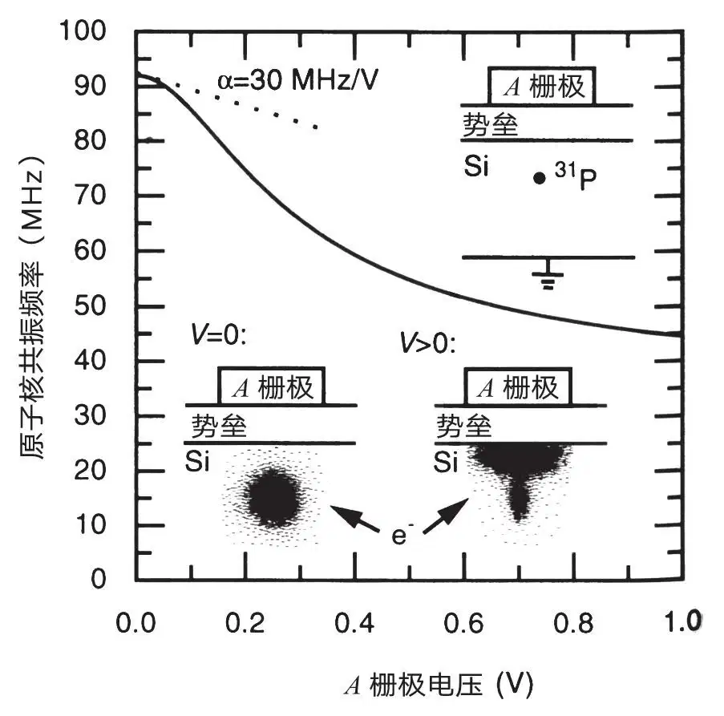
图2．施加于A栅极的电场使得电子波函数远离施主而朝向势垒，这就减少了超精细相互作用以及原子核的共振频率。施主的原子核–电子系统是一个电压调节的振荡器，调谐参数α量级为30 MHz·V－1。 英文
除了单个自旋的旋转，量子力学计算需要双量子比特的“控制旋转”操作，当且仅当控制量子比特的取向在特定方向时，该操作将会使目标量子比特的自旋按照指定的角度旋转，从而使得控制量子比特的取向不变[26,27]。要实现这种控制旋转操作需要两个施主原子核–电子自旋系统中的核自旋交换[13]，当两个施主足够接近的时候，这将会由于电子介导相互作用而发生。当能量尺度与施主–电子结合能相比较小的时候，两个耦合的施主原子核–电子系统的哈密顿量可以表示为H=H(B)+A1σ1n·σ2e +A2σ2n·σ2e +Jσ1e·σ2e。其中H（B）为自旋的磁场相互作用项。A1和A2为两个原子核–电子系统中各自的超精细相互作用能量。4J为依赖于电子波函数重叠的交换能。对于足够隔离的施主[28]而言，
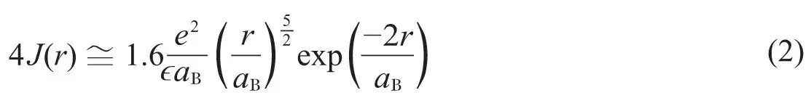
其中r是施主之间的距离，ϵ是半导体的介电常数，aB是半导体的玻尔半径。根据硅来选取适当的参数，这个函数的图像如图3所示。起初由氢原子推导出来的公式（2）在硅中是非常复杂的，这是因为硅的谷简并各向异性能带结构[29]。每一个谷干涉的交换耦合项都会导致J(r）的振荡行为。在这里的讨论中，我们将忽略由于硅的能带结构导致的复杂问题。为了在图3中确定J(r)，采用硅的横质量（≅0.2me），aB=30 Å。因为J正比于电子波函数的重叠，它会通过施主之间的“J栅极”所产生的静电势而变化[13]。如下所示，当4J≈μBB的时候，核之间会产生显著的耦合，这个已经逼近了施主之间的最小要求间距100~200 Å。然而实际上的间距可能远大于这个值，因为J栅极可以被施加正偏压来减少施主之间的势垒，量子计算机所需要的栅极的尺寸已经接近了当今电子学微加工技术的极限。 英文
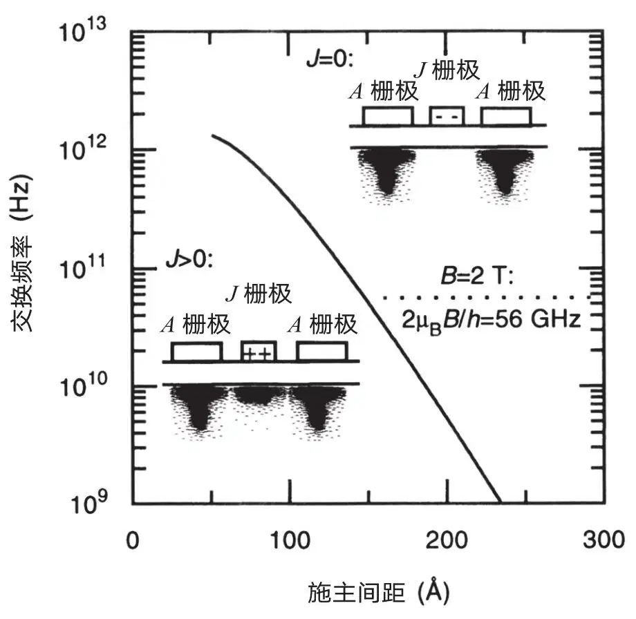
图3．J栅极可以改变施主之间的静电势垒V，以此来增强或者减弱交换耦合，正比于电子波函数的重叠。当V=0时，硅的交换频率（4J / h）如图所示。 英文
对于双电子系统来说，交换作用使得电子的单重态
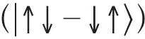
能量相对于三重态能量降低[30]。（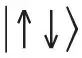
符号被用来代表电子自旋态，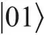
符号表示核自旋态；在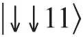
状态下，所有自旋在同一方向。为了简化，归一化的常数被省略）。然而在磁场存在时，当J<μBB / 2时（如图4a所示），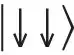
将会是电子的基态。在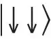
态中，核态的能量可以用微扰理论取到A的二阶项来计算。当A1=A2=A时，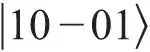
态的能量相比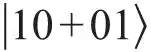
态的能量小了：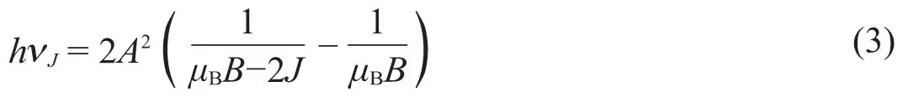
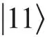
态在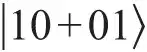
态上方距离能量hνA处，而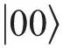
在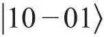
下方距离能量hνA处，由公式（1）给出。对于Si:31P系统，在B=2 T且4J / h=30 GHz时，公式（3）给出解为νJ=75 kHz。这个核自旋交换频率近似于计算机进行二进制运算的频率（νJ可以通过增加J来增加，但是也以增加了耦合原子核–电子自旋激发的弛豫速率为代价）。单个自旋的运算速度是由Bac的大小来决定的，当Bac=10－3 T时相当于75 kHz。 英文
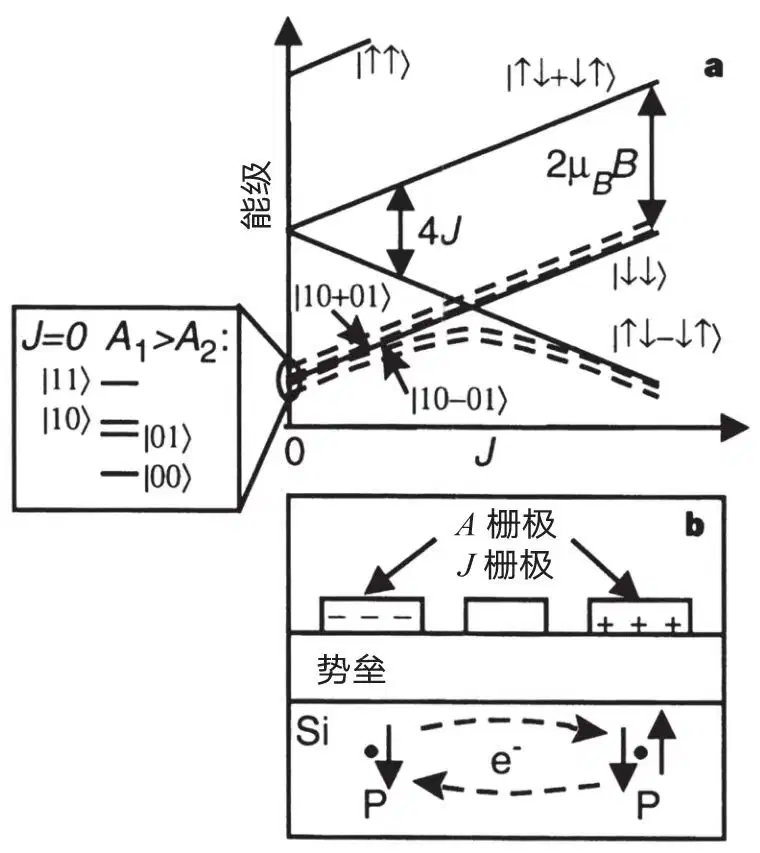
图4．两个量子比特的逻辑和自旋测量。a，电子（实线）和最低能量耦合电子–核自旋（虚线）能级随J的变化。当J<μBB / 2，两个量子比特计算通过使用J栅极控制
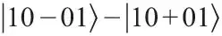
能级分裂来实现。在J=μBB / 2上方，耦合系统的态演化为不同电子极化的态。原子核的具有很大能量分裂的（受A栅极偏压的控制）在J=0的态决定了在J绝热增加后，电子最终的自旋态。b，只有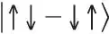
电子才可以转换成电子与同一个施主结合的态（D－态）。这个转换过程的电子电流是可以通过电容技术来测量的，这就使得电子和原子核的基础自旋态可以被探测。 英文
自旋测量
在本文提出的量子计算机中，核自旋测量是分两步来实现的：不同的原子核自旋态绝热转化为不同电子极化的态，且电子自旋是由其对交换耦合双电子系统的轨道波函数对称性的影响来决定的。图4展示了如何实现这一转换的过程。当计算完成时J<μBB / 2且电子被充分地极化，测量在J >μBB / 2时进行，
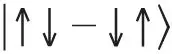
态有最低的能量（图4a）。当电子能级交叉时，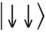
态和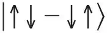
态就会通过与原子核产生超精细相互作用耦合。在J绝热增加过程中，当J>μBB / 2时，两个处于J=0的低能量核自旋态演化为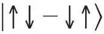
态，然而两个高能级的核自旋态仍然保持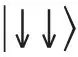
态。如果在J=0时，A1>A2，1号原子核自旋的取向将独自决定系统在J的绝热增加过程中是演化为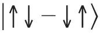
态或者是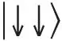
态。 英文
一种用来探测电子自旋态的方法是使用电子手段，如图4b所示。如果施主上方的A栅极被施加适当的偏压，两个电子可以都结合到同一个施主（D－态）。在Si:P中D－态总是具有1.7 meV第二电子结合能的单重态[31,32]。因此，施加一个差分电压于栅极A上可以导致只有处于单重态的电子可以在施主间产生电荷移动。这种电荷移动可以通过灵敏的单电子电容技术[33]来测量。这种测量自旋的方法产生的信号持续到电子自旋发生弛豫为止，如前所述，在Si:P系统中这种过程可以有几千秒的时间。 英文
自旋的测量过程也可以用来将核自旋初始化到指定的态上：首先确定自旋的态，如果需要的话就翻转它使它停在想要的自旋态上。正如我们已经讨论的自旋计算过程，自旋的测量和准备原则上可以在计算机中并行执行。 英文
初始化计算机
在进行任何计算之前，计算机必须通过定标A栅极和J栅极来实现初始化。施主位置以及栅极大小的不均匀必然造成不同单元执行逻辑运算所必需的栅极偏压的涨落，不过每个单元的参数都可以通过计算机的测量功能来独自地确定，因为这里讨论的测量技术不需要非常准确地了解J栅极和A栅极的耦合。A栅极下面核自旋与外加Bac共振时，所需要施加的A栅极电压可以通过绝热快速通过技术[34]来确定：当Bac=0时，核自旋被测量，且A栅极被施加一个能消除共振的偏压。Bac然后被启动，在指定的电压区间内扫描A栅极偏压。然后关闭Bac并再次测量核自旋。当且仅当共振在指定的A栅极电压范围内出现的时候，自旋才会被翻转。在越来越小的电压范围内测试自旋的翻转将能确定出共振的电压。当邻近的A栅极被定标之后，J栅极可以用同样的方法在两个耦合单元的共振区扫描J栅极偏压来定标。 英文
这种定标程序可以在多个单元上面并行进行，所以定标问题不是将计算机扩展到大尺寸的主要阻碍。定标电压可以存储在连接到量子计算机上的硅芯片的电容中。因此，外部控制电路只需要控制栅极偏压的时间，而不是他们的大小。 英文
栅极导致的自旋退相干
在上面概述的量子计算机的设计结构中，对A类和J类栅极施加偏压可以自定义地控制量子比特以及他们之间的相互作用。然而如果栅极的偏压振荡出期望的范围，栅极的存在将导致自旋退相干。这些效应应该在任何通过栅极控制来实现的量子计算机的性能评价中被考虑到。在计算过程中，导致退相干的主要来源一般是A栅极上的电压振荡。（当J<μBB / 2时，态能量被J栅极调制的幅度远小于被A栅极调制的幅度。J超过μBB / 2只会发生在测量过程，那时退相干是不可避免的。）在t=0时刻同相位中的两个自旋的进动频率取决于他们各自A栅极上的电势。这两个电势的差值波动引起进动频率的相对变化。在稍后的t=tϕ时刻，这两个自旋的相位将会相差180度（反相位）；tϕ可以通过这个双自旋系统在
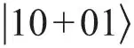
（自旋同相位）和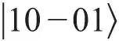
（自旋180度反相位）两种状态间的转换速率来确定。这些态之间耦合的哈密顿量为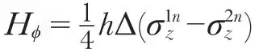
，其中Δ是不同自旋进动频率差值的振荡。对该振荡哈密顿量进行标准处理[34]导出：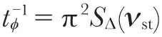
，其中SΔ是频率振荡的频谱密度，νst是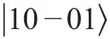
和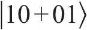
态之间的频率差。在一个固定的偏压下，A类栅极有一个频率调谐参数α=dΔ / dV。因此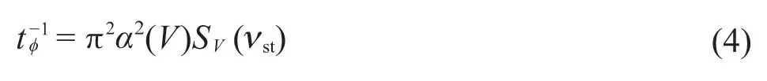
其中SV是栅极电压涨落的频谱密度。 英文
良好的室温电子元件的SV的量级是10－18 V2 / Hz，这和一个50 Ω的电阻的室温约翰逊噪音是接近的。从图2中估算出的α值大概为10~100 MHz·V－1，导出tϕ=10~1,000 s；α可以由施主阵列单元的大小来确定，且不能在不减小单元之间的相互作用的情况下被轻易地减小（来增加tϕ）。因为α是栅极偏压的函数（图2），tϕ可以通过最小化A类栅极偏压来增加。 英文
虽然公式4对白噪声来说是正确的，在低频率条件下，导致自旋退相的主要原因很可能是依赖于材料的波动（1 / f噪音）。因此给出计算机一个准确的预期值tϕ是非常困难的。计算机内部的电荷涨落（例如由陷阱和表面态的占位数涨落引起）很可能是非常重要的，这就要求在计算机制造中最小化这种电荷涨落。 英文
虽然依赖材料的波动很难预期，在低温条件下的计算机运算以及量子计算无耗散的特征意味着，原则上波动可以被保持得很小：使用低温电子器件来给栅极施加偏压（例如之前讨论中提到的使用芯片电容）可以使得tϕ约等于106 s。电子器件控制的核自旋量子计算机因此理论上具备了在tϕ时间内执行105到1010逻辑运算的能力，这样基本上就满足了普雷斯基尔的每个量子比特运算误码率为10－6的准则[8]。 英文
构造计算机
构造一个这里讨论的计算机显然将是非常巨大的挑战：选取的材料必须完全没有自旋（I≠0同位素）和电荷杂质，以避免计算机中出现退相位扰动。施主必须作为一个有序的阵列导入材料表面几百埃以下。最后，横向尺寸和间距为100 Å左右的栅极被加工在表面，与其下方的施主对应。虽然使用二氧化硅（大多数当前传统电子器件所使用的标准MOS技术）作为势垒层材料是可行的，但是由于需要最小化无序和扰动，意味着异质外延材料如硅/硅锗（Si/SiGe）最终可能优于硅/二氧化硅（Si/SiO2）。 英文
构造上文描述的量子计算机最明显的困难是如何将施主阵列注入势垒层下方的硅层中。现阶段半导体结构是逐层沉积制造的。δ掺杂技术得到的施主位于材料中的单层中，其中施主是随机分布在这一层中的。我们这里设想的量子计算机要求施主被放置于有序的一维或者二维的阵列中；另外，施主必须被准确地放置在每个阵列单元中，这就使得通过光刻技术和离子注入或者通过聚焦沉积方法都很难制造出这种阵列。目前正在发展的将单原子放在表面的技术是利用超高真空扫描隧道显微镜[35]或者原子光学技术[36]实现的，这些是可能被用来放置施主阵列的备选方法。接着的一个挑战将是在施主放置处表面上生长高质量的硅层。 英文
制造大的施主阵列也许是非常困难的，但是用来检验此处介绍的逻辑计算和测量技术的双自旋器件可以使用随机掺杂技术来制造。虽然只有一小部分这样的器件可以正常工作，但是相关的传统硅电子学中的复用电路可以用来独立地检测许多器件。制造这种“混合”（量子–传统）电路的相对简易性是硅基量子计算机的独特魅力所在。 英文
在基于硅的核自旋量子计算机中，量子计算所必需的高度相干的量子态被整合到能够实现复杂计算机结构的材料中。实现量子计算机面临的重要挑战，尤其是100 Å尺度的栅极器件制造，与下一代传统电子器件面临的挑战类似；因此，正为传统电子器件研发的新制造技术将与开发硅量子计算机的努力直接相关。足够复杂以至于可以实现其理论潜力的量子计算机，也许会在将来的某一天使用传统计算机类似的技术搭建起来。 英文
（姜克 翻译；杜江峰 审稿）